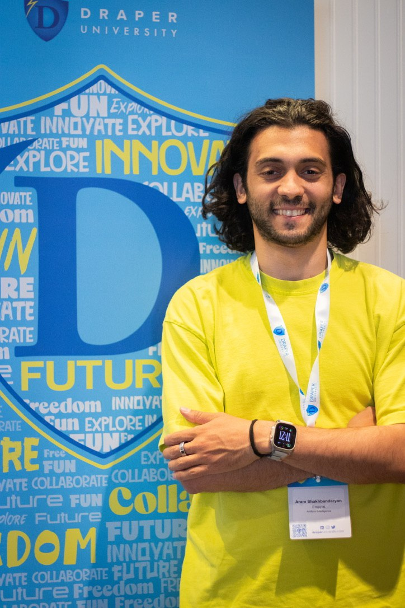

Background
I started inside big systems and ended up obsessed with where they fail.
Google taught me how systems scale. Startups taught me where judgment, speed, and trust break down.
Inside large systems
At Google, I worked with Tech, B2B, and Fintech companies across the US, EU, and APAC — modeling growth, running experiments, and working with C-level teams.
Inside founder reality
At Empy, I focused on conversations under pressure. At Decato.ai, I focused on creative work trapped in slow iteration.
I learned structure inside systems — and pressure inside startups.
